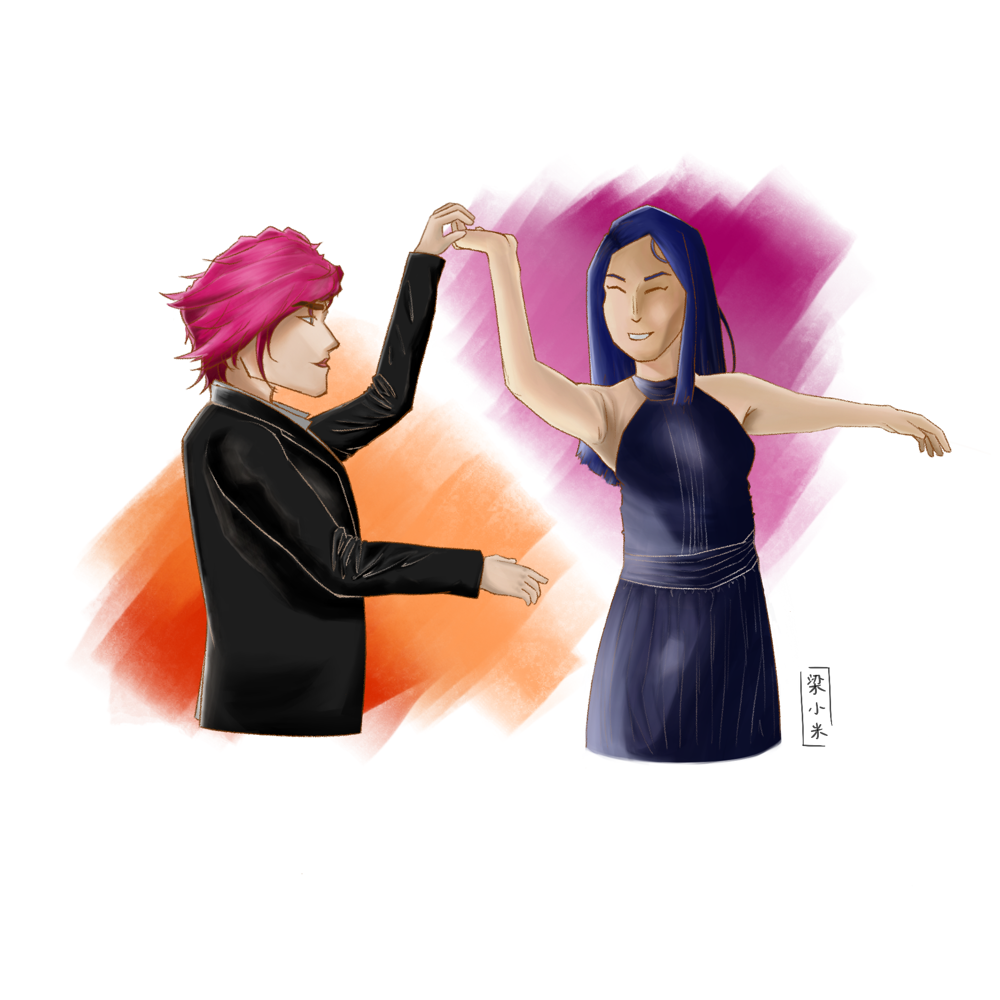
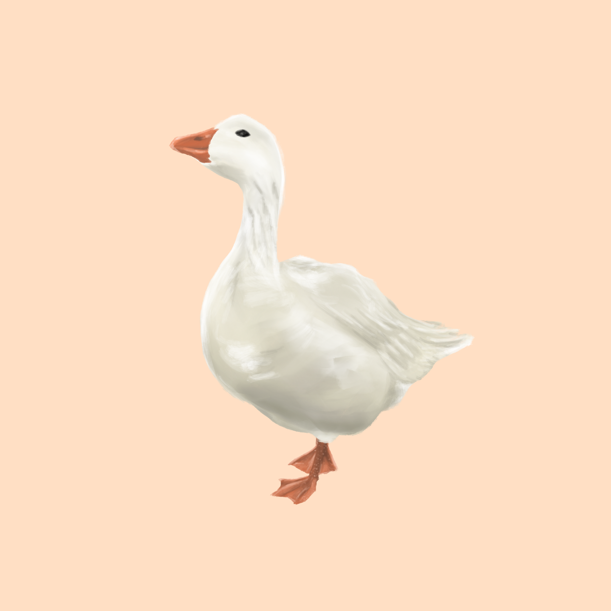
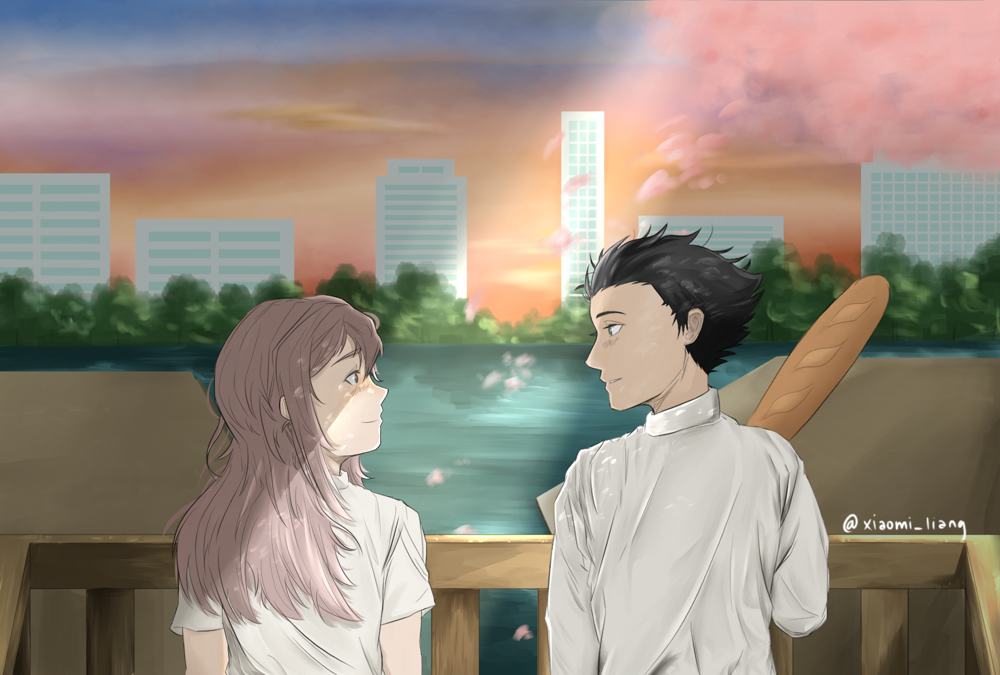

<!DOCTYPE html>
<html>
    <head>
        <title>
            Michelle Liang
        </title>
        <meta charset="UTF-8">
        <meta name="viewport" content="width=device-width, initial-scale=1.0">
        <link href="https://cdn.jsdelivr.net/npm/bootstrap@5.3.0/dist/css/bootstrap.min.css" rel="stylesheet" integrity="sha384-9ndCyUaIbzAi2FUVXJi0CjmCapSmO7SnpJef0486qhLnuZ2cdeRhO02iuK6FUUVM" crossorigin="anonymous">
        <link rel="stylesheet" href="css/styles.css">
        <script src="https://code.jquery.com/jquery-3.7.0.js" integrity="sha256-JlqSTELeR4TLqP0OG9dxM7yDPqX1ox/HfgiSLBj8+kM=" crossorigin="anonymous"></script>
        <script src="js/header_footer.js"></script>
    </head>
</html>
<body class="container-fluid">
    <header id="sameHeader">
        <div class="name-banner">
            
        </div>
        <nav class="nav-container">
            <ul class="nav-menu">
                <li class="nav-tab">
                    <a href="index.html">
                        
                    </a>
                </li>
                <li class="nav-tab">
                    <a href="projects.html">
                        
                    </a>
                </li>
                <li class="nav-tab">
                    <a href="art.html">
                        
                    </a>
                </li>
                <li class="nav-tab">
                    <a href="contact_me.html">
                        
                    </a>
                </li>
            </ul>
        </nav>
    </header>
    <div class="container-project-page">
        <p class="introductory">Below are recent pieces I've painted digitally. I primarily use Procreate, though I've used Clip Studio Paint, Paint Tool SAI, and Photoshop in the past.</p>
        <div class="project-row">
            <div class="project-item left">
                
                <div class="project-container art-square">
                    
                </div>
                <p class="bio-text date align">
                    <strong>2023</strong>
                </p>
                <p class="bio-text align">
                    Characters Vi and Caitlyn from the animated series <em>Arcane</em>. Digitally painted in Procreate.
                </p>
            </div>
            <div class="project-item">
                
                <div class="project-container art-square align">
                    
                </div>
                <p class="bio-text date align">
                    <strong>2023</strong>
                </p>
                <p class="bio-text align">
                    A quick 1-2 hour painting of a goose I saw in Boston. Digitally painted in Procreate.
                </p>
            </div>
        </div>
        <div class="project-row">
            <div class="project-item left">
                
                <div class="project-container align" id="ily">
                    
                </div>
                <p class="bio-text date align">
                    <strong>2022</strong>
                </p>
                <p class="bio-text align">
                    A remake of the iconic <em>Princess Mononoke</em> scene with the characters Shin-Ae and Yeong-Gi/Nol from the webcomic series <em>I Love Yoo</em>. Digitally painted in Procreate.
                </p>
            </div>
            <div class="project-item">
                
                <div class="project-container align" id="knk">
                    
                </div>
                <p class="bio-text date align">
                    <strong>2021</strong>
                </p>
                <p class="bio-text align">
                    Characters Shouya and Shouko from the manga series and the movie <em>A Silent Voice</em>. Digitally painted in Clip Studio Paint and Procreate.
                </p>
            </div>
        </div>
        <!-- <div class="bio-item">
            
            <div class="project-container square right">
                
            </div>
            <p class="bio-text date">
                <strong>2021</strong>
            </p>
            <p class="bio-text">
                <em>Snek is You</em> is a remake of the puzzle game <em>Baba is You</em>. Most controls, including movement, pushing obstacles, and basic pulling of obstacles, are functional.
                Created for Fundamentals of Programming (6.009/6.1010).
            </p>
        </div> -->
    </div>
</body>